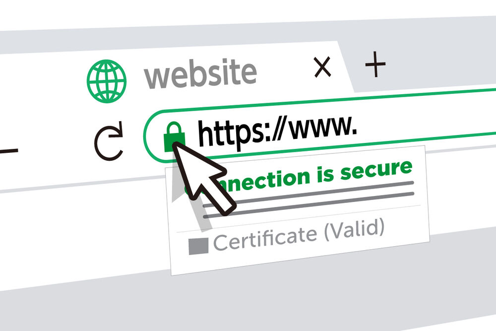
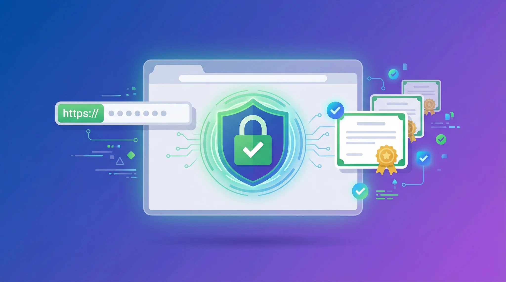
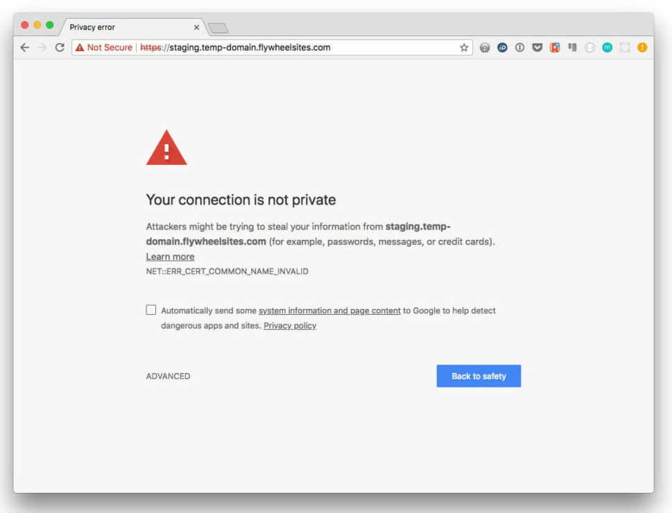
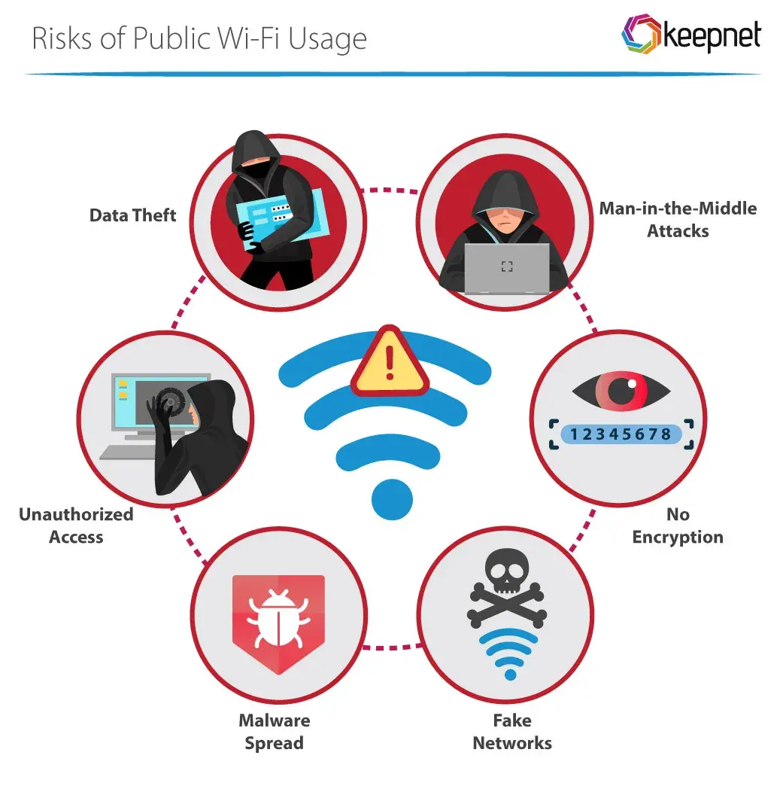

Érthető útmutató a HTTP és HTTPS közötti különbségről, a tanúsítványok szerepéről, a böngésző figyelmeztetéseinek értelmezéséről és a nyilvános Wi-Fi kockázatairól.
A HTTP (HyperText Transfer Protocol) az a protokoll, amelyen keresztül a böngésző és a webszerver kommunikál egymással. Lényegében ez az a közös „nyelv", amelyen a böngészőnk kéréseket küld (például: „kérem a kezdőlapot"), a szerver pedig válaszol (elküldi az oldal tartalmát). Szinte minden, amit az interneten teszünk – weboldalak megnyitása, űrlapok kitöltése, képek betöltése – a háttérben HTTP- vagy HTTPS-kéréseken keresztül zajlik.
A HTTP-t az 1990-es évek elején alkották meg, amikor az internet még jóval kisebb és „barátságosabb" hely volt, ezért a biztonság nem volt elsődleges szempont. A protokoll legnagyobb gyengesége, hogy az adatokat titkosítás nélkül, nyílt szövegként továbbítja. Ez azt jelenti, hogy az adat a böngészőnk és a szerver közötti úton bárhol olvasható marad: ha valaki lehallgatja a forgalmat – például egy nyilvános Wi-Fi hálózaton, egy feltört routeren vagy egy közbeékelődő eszközön keresztül –, akkor szó szerint olvasni tudja a beírt jelszavakat, e-maileket, üzeneteket és minden más adatot, mintha egy nyitott levelezőlapot olvasna el.
A HTTPS (HyperText Transfer Protocol Secure) ugyanaz a protokoll, mint a HTTP, csak egy titkosítási réteggel kiegészítve. A titkosítást a TLS (Transport Layer Security) biztosítja, amely a régebbi, ma már elavultnak számító SSL protokoll utódja. (Sokan a megszokás miatt máig „SSL-tanúsítványt" emlegetnek, de a valóságban a modern rendszerek mind a TLS-t használják.)
A HTTPS használatakor az adatok egy titkosított csatornán haladnak a böngésző és a szerver között. Mielőtt bármilyen tartalom elindulna, a két fél egy úgynevezett „kézfogás" (handshake) során megállapodik egy közös titkos kulcsban, és ettől kezdve minden adatot ezzel kódolnak. Így ha egy lehallgató meg is szerzi az átküldött csomagokat, csak értelmezhetetlen, összekevert adatfolyamot lát – a tartalomhoz a kulcs nélkül nem fér hozzá.

Biztonságos kapcsolat (HTTPS):
Nem biztonságos kapcsolat (HTTP):
A lakat ikon a böngésző címsorában azt jelzi, hogy a kapcsolat titkosított. A legtöbb böngésző a titkosítatlan HTTP-oldalaknál külön „Nem biztonságos" felirattal figyelmeztet a cím mellett.
| Szempont | HTTP | HTTPS |
|---|---|---|
| Titkosítás | Nincs (nyílt szöveg) | Van (TLS titkosítás) |
| Adatlopás kockázata | Magas | Alacsony |
| Böngésző jelzése | „Nem biztonságos" | Lakat ikon |
| Tanúsítvány | Nem szükséges | Szükséges (CA által kiállított) |
| Alapértelmezett port | 80 | 443 |
| Adatok módosíthatósága útközben | Lehetséges (észrevétlenül) | Nem (integritásvédelem) |
| Ajánlott érzékeny adatokhoz | Nem | Igen |
A HTTPS működéséhez egy digitális tanúsítványra (SSL/TLS tanúsítvány) van szükség. Ez egy elektronikus igazolás, amely megerősíti, hogy egy adott weboldal valóban az, aminek mondja magát. Egy kicsit olyan, mint egy online személyi igazolvány: tartalmazza a weboldal domainnevét, a tulajdonos adatait, az érvényességi időt, valamint a titkosításhoz használt nyilvános kulcsot.
A tanúsítványokat megbízható, független szervezetek, az úgynevezett tanúsítványkiállítók (CA – Certificate Authority) állítják ki, miután ellenőrizték a weboldal tulajdonosának jogosultságát. A CA-k szerepe kulcsfontosságú: ők azok a „közjegyzők", akikben mind a böngészők, mind a felhasználók megbíznak, és akiknek a hitelesítése nélkül a tanúsítvány mit sem érne.
Minden böngésző és operációs rendszer egy beépített listát tartalmaz a megbízhatónak ismert tanúsítványkiállítókról (ez az úgynevezett „gyökértanúsítvány-tár"). Amikor egy HTTPS-oldalra látogatunk, a böngésző a háttérben, a másodperc tört része alatt több dolgot is leellenőriz:
Ha minden ellenőrzés sikeres, a böngésző zökkenőmentesen betölti az oldalt, és megjelenik a lakat ikon. Ha viszont bármelyik pont hibázik – lejárt, visszavont vagy hamis tanúsítvány –, a böngésző figyelmeztetést jelenít meg, és nem tölti be automatikusan az oldalt.
Nem minden tanúsítvány egyforma: a kiállítás előtti ellenőrzés alapossága szerint három fő típust különböztetünk meg.

A böngészők az elmúlt években egyre szigorúbban védik a felhasználókat. Ha egy oldallal valamilyen biztonsági probléma van, nem hagyják, hogy csendben, észrevétlenül betöltődjön: ehelyett feltűnő, gyakran teljes oldalas figyelmeztetést jelenítenek meg. Ennek célja, hogy egy pillanatra megállítsanak minket, és átgondoljuk, valóban folytatni akarjuk-e – így próbálják megelőzni az adatlopást és a csalásokat. Érdemes ezeket az üzeneteket komolyan venni, mert a böngésző nem véletlenül, hanem konkrét technikai ok miatt jelzi őket.

A böngésző jellemzően egy piros vagy figyelmeztető színű, teljes oldalas üzenetet jelenít meg, és nem tölti be automatikusan az oldalt.
A csalók egyik kedvenc módszere, hogy a valódihoz nagyon hasonló webcímeket hoznak létre, abban bízva, hogy a felhasználó nem nézi meg elég alaposan a címsort. Egyetlen apró eltérés – egy plusz betű, egy kötőjel vagy egy szám – is árulkodó jel lehet. Érdemes szokássá tenni, hogy bejelentkezés vagy fizetés előtt mindig elolvassuk a teljes domainnevet. Néhány tipikus trükk:
| Valódi cím | Hamis (csaló) cím | Mi a trükk? |
|---|---|---|
otpbank.hu |
otp-bank-login.hu |
Plusz szavak a domainben |
facebook.com |
faceboook.com |
Elgépelt domain (extra betű) |
paypal.com |
paypal.com.verify-login.net |
A valódi név csak aldomain |
microsoft.com |
micros0ft.com |
Számjegy a betű helyett (0 az o helyett) |
.hu
vagy .com előtt). A paypal.com.verify-login.net cím ennek alapján valójában a
verify-login.net oldalhoz tartozik – a „paypal.com" itt csak megtévesztő aldomain, nincs
köze a valódi PayPalhoz!
A kávézók, repülőterek, szállodák és bevásárlóközpontok ingyenes Wi-Fi hálózatai rendkívül kényelmesek, de komoly biztonsági kockázatot rejtenek. A legnagyobb gond, hogy ezek a hálózatok gyakran nyíltak, vagyis bárki csatlakozhat hozzájuk jelszó nélkül, és sok eszköz osztozik ugyanazon a hálózaton. Ez megkönnyíti a támadók dolgát: ugyanahhoz a hálózathoz kapcsolódva könnyebben megfigyelhetik vagy akár eltéríthetik a többiek forgalmát.
Fontos megérteni, hogy a veszély nem maga a Wi-Fi, hanem az, hogy egy idegen, nem ellenőrzött hálózaton nem tudhatjuk, ki figyeli a forgalmat. Az alábbi módszerek a leggyakoribbak:

Még ha a támadó le is hallgatja a hálózatot, a HTTPS miatt csak titkosított, értelmezhetetlen adatfolyamot lát. Ezért is fontos, hogy mindig HTTPS-en kommunikáljunk.
A jó hír az, hogy néhány egyszerű szokással a nyilvános Wi-Fi kockázatainak nagy része kivédhető. Nem kell lemondanunk a kényelemről – csak tudatosan kell használnunk ezeket a hálózatokat.
A VPN (Virtual Private Network, azaz virtuális magánhálózat) egy titkosított „alagutat" hoz létre az eszközöd és egy megbízható szerver között. Minden internetes forgalmad ezen az alagúton halad át, így még egy nyilvános, lehallgatott Wi-Fin is védve marad – nem csak a HTTPS-oldalak, hanem minden alkalmazás és szolgáltatás forgalma is.
Ráadásul a VPN elrejti a valódi IP-címedet is, így a böngészésed nehezebben követhető vissza.
Döntsd el a kérdéseknél, mit tennél! A kvíz végén megkapod az eredményed.